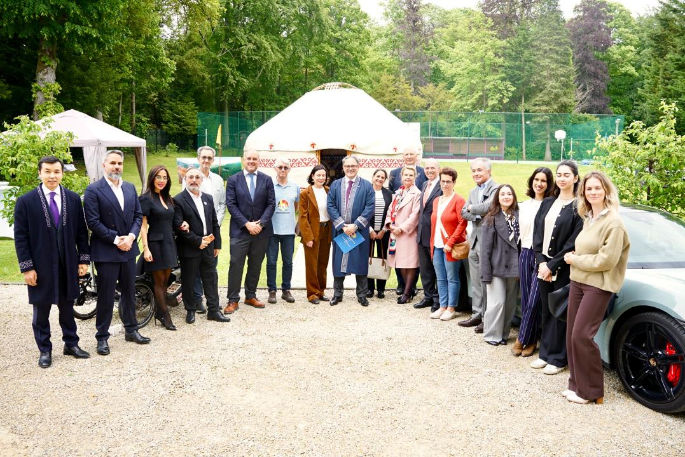
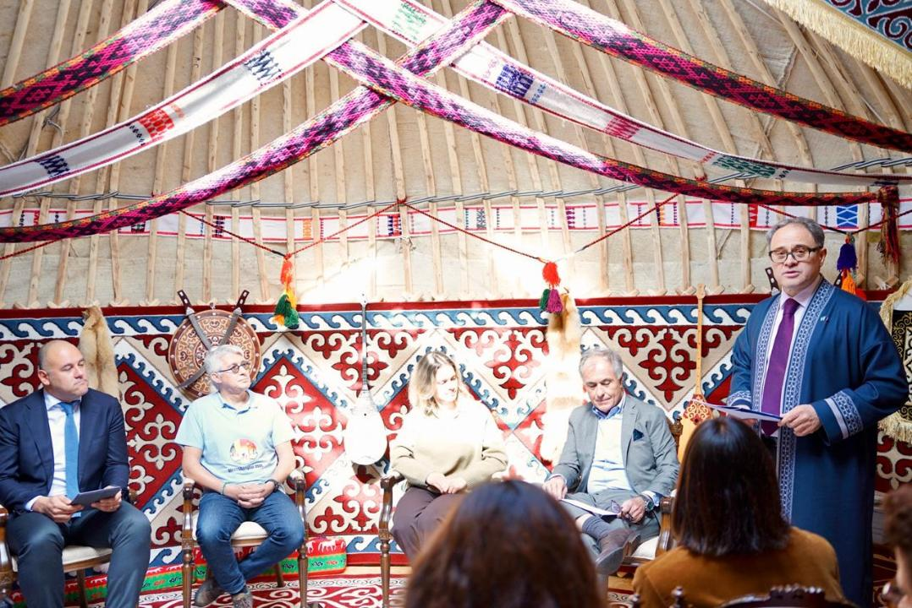
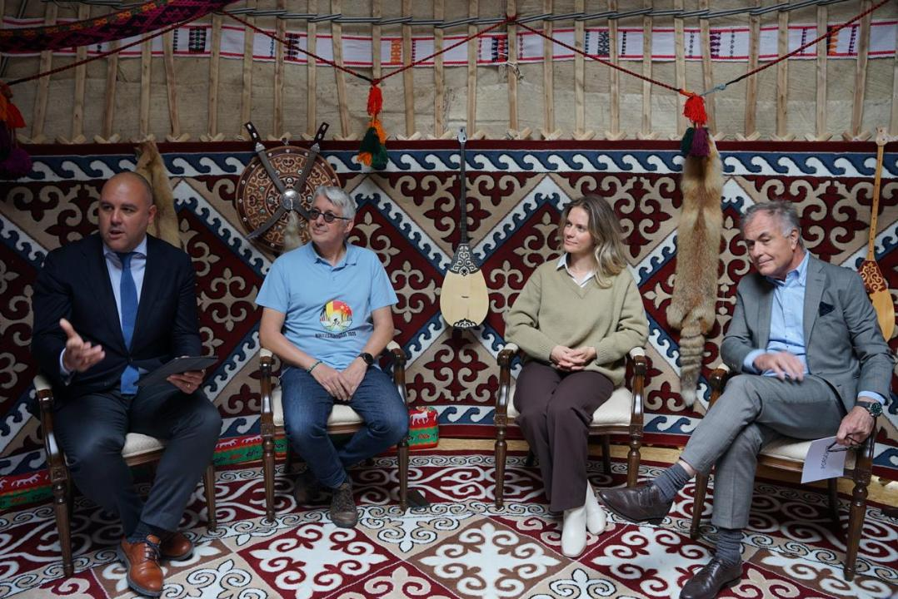
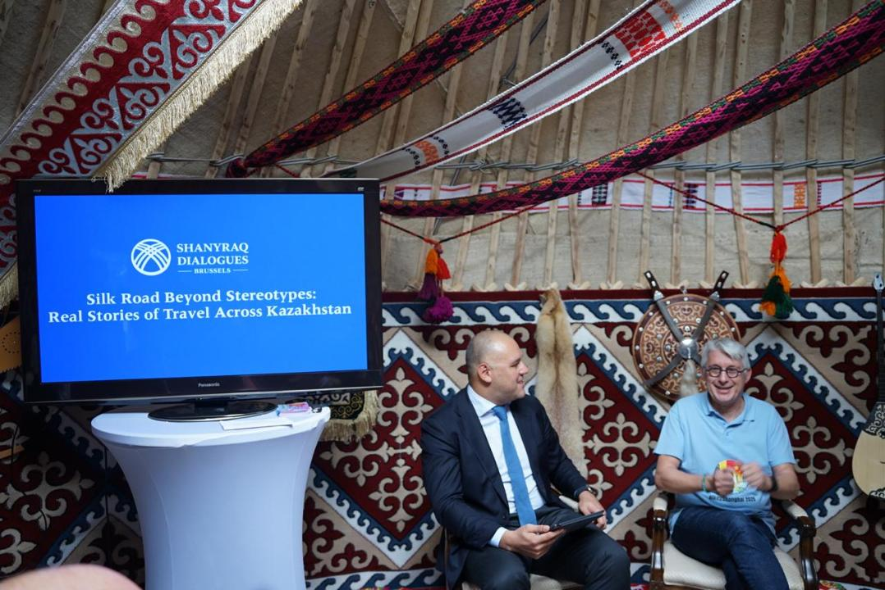

Brussels hosted another Shanyraq Dialogues session dedicated to Kazakhstan's cultural, historical, and tourism potential.
The discussion also touched upon the legacy of the Golden Horde and the Kazakh Boo phenomenon.
Episode 3 ·
Kazakhstan's cultural, historical, and tourism potential in Brussels.




Brussels hosted another Shanyraq Dialogues session dedicated to Kazakhstan's cultural, historical, and tourism potential.
The discussion also touched upon the legacy of the Golden Horde and the Kazakh Boo phenomenon.